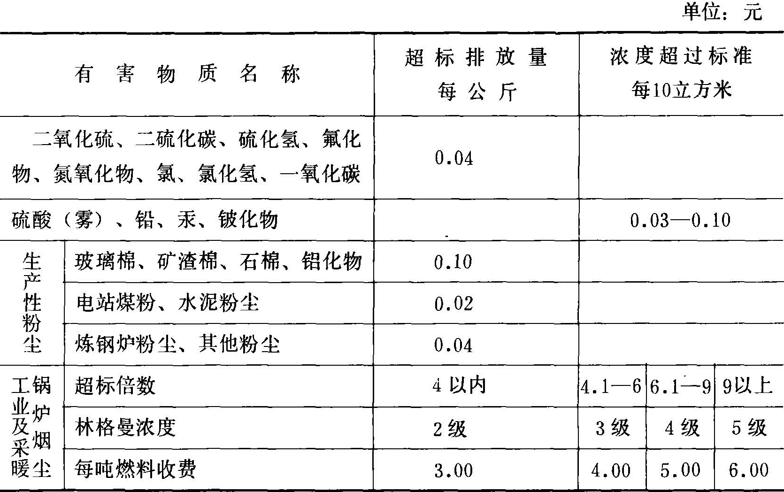
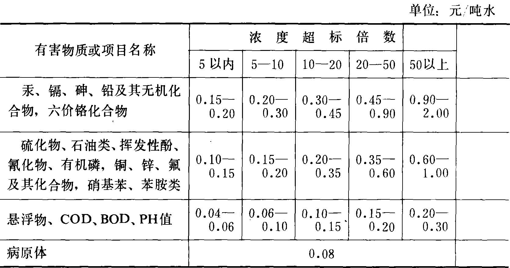
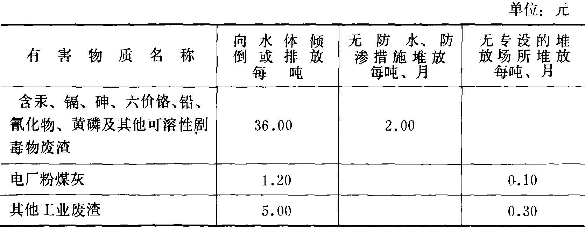

|
资料名称：征收排污费暂行办法
|
|
国务院 现将《征收排污费暂行办法》发给你们，请结合各地实际情况贯彻执行。
国务院
征收排污费暂行办法 第一条 根据《中华人民共和国环境保护法（试行）》第十八条关于“超过国家规定的标准排放污染物，要按照排放污染物的数量和浓度，根据规定收取排污费”的规定，制订本办法。 第二条 征收排污费的目的，是为了促进企业、事业单位加强经营管理，节约和综合利用资源，治理污染，改善环境。 第三条 一切企业、事业单位，都应当执行国家发布的《工业“三废”排放试行标准》等有关标准。省、自治区、直辖市人民政府批准和发布了地区性排放标准的，位于当地的企业、事业单位应当执行地区性排放标准。
第四条 排污单位应当如实地向当地环境保护部门申报、登记排放污染物的种类、数量和浓度，经环境保护部门或其指定的监测单位核定后，作为征收排污费的依据。 第五条 排污费的征收标准，按本办法附表的规定执行。个别工业密集、污染特别严重的大、中城市，经国务院环境保护领导小组批准，对收费标准可作适当调整。
第六条 对缴纳排污费后仍未达到排放标准的排污单位，从开征第三年起，每年提高征收标准百分之五。排污单位经过治理和加强管理，已经达到排放标准，或者显著降低排污数量和浓度，可向当地环境保护部门申请，经监测属实，应当停止或减少收费。
第七条 排污费按月或按季征收。排污单位不论其隶属关系和所有制关系，都应当根据当地环境保护部门的缴费通知单，在二十天内向指定银行缴付排污费。逾期不缴的，每天增收滞纳金千分之一。
第八条 企业单位缴纳的排污费，可以从生产成本中列支。提高征收标准的部分，全民所有制企业在利润留成或企业基金中列支；实行“利改税，独立核算，自负盈亏”的全民所有制企业和集体所有制企业，在缴纳所得税后的利润中列支。事业单位缴纳的排污费，先从单位包干结余和预算外资金中开支，如有不足，可以从单位事业费中列支。 第九条 征收的排污费，纳入预算内，作为环境保护补助资金，按专项资金管理，不参与体制分成。
第十条 环境保护补助资金，应当主要用于补助重点排污单位处治污染源以及环境污染的综合性治理措施。
第十一条 环境保护补助资金，通过建设银行监督拨款。 第十二条 各省、自治区、直辖市人民政府可根据本办法，制定具体的实施办法。 第十三条 本办法自一九八二年七月一日起执行。 附表 排污费征收标准 一、废气  注：（1）蒸汽机车及其他流动污染源的排烟暂不收费。
二、废水  注：PH值超出6-9，每高、低1按超标倍数5以内基数（0.04-0.06元）的一倍计。 三、废渣  注：（1）排放或倾倒或无防水、防渗措施堆放剧毒废渣，除收费外，应立即制止其行为，并责成清理。
（2018.10.28更新） |
|
声明 本资料来源于网络，版权归原作者所有，若需引用请注明出处，引用前请与原件进行核对，请勿用于商业用途！ |
|
声明 本资料来源于网络，版权归原作者所有，若需引用请注明出处，引用前请与原件进行核对，请勿用于商业用途！ |
| 分享按钮 |
|
微信扫一扫前往微店 |
|
|
|
|